2025 Advanced Higher Computing Science questions
Source: Scottish Qualifications Authority (SQA) / Qualifications Scotland. This is a StemInteract HTML companion, not an official HTML edition. Selectable text is supplied alongside original page images. Use the images or original PDF for equations, powers, fractions, vector notation, tables and diagrams; text extraction cannot fully preserve mathematical layout.
Jump to a question
PDF page 1
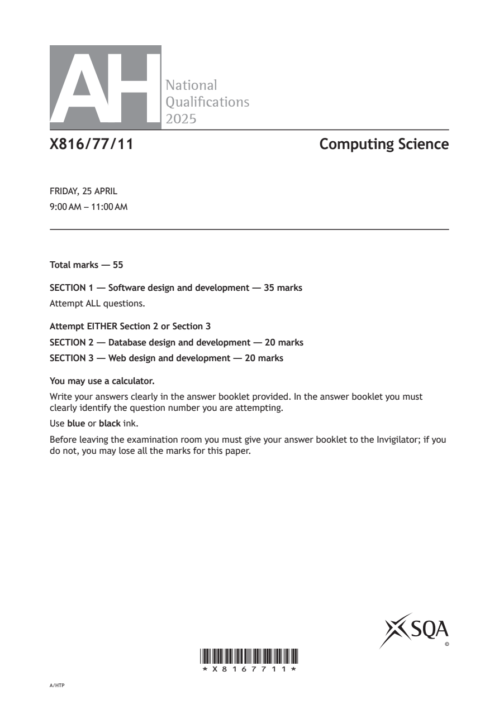
Selectable page text
AH
National
Qualications
2025
X816/77/11 Computing Science
FRIDAY, 25 APRIL
9:00 AM – 11:00 AM
Total marks — 55
SECTION 1 — Software design and development — 35 marks
Attempt ALL questions.
Attempt EITHER Section 2 or Section 3
SECTION 2 — Database design and development — 20 marks
SECTION 3 — Web design and development — 20 marks
You may use a calculator.
Write your answers clearly in the answer booklet provided. In the answer booklet you must
clearly identify the question number you are attempting.
Use blue or black ink.
Before leaving the examination room you must give your answer booklet to the Invigilator; if you
do not, you may lose all the marks for this paper.
©
*X8167711*
A/HTPPDF page 2
Question 1Selectable page text
MARKS
SECTION 1 — SOFTWARE DESIGN AND DEVELOPMENT — 35 marks
Attempt ALL questions
1. An online version of a board game is being developed where the wording in each
square on the game board is stored as a node in a linked list. The layout of the game
board is shown below.
Move Move Move
Start forward back forward
3 steps 2 steps 2 steps
Move
back
2 steps
Move Move Move Move
back forward back forward
2 steps 3 steps 3 steps 2 steps
Move
forward
2 steps
Move Move Move Move
forward back forward back Finish
3 steps 2 steps 2 steps 1 step
State the type of linked list that should be used. Justify your answer. 2
page 02PDF page 3
Question 2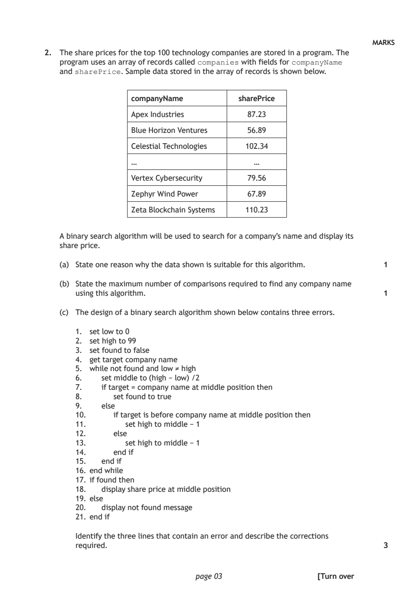
Selectable page text
MARKS
2. The share prices for the top 100 technology companies are stored in a program. The
program uses an array of records called with fields for
companies companyName
and . Sample data stored in the array of records is shown below.
sharePrice
companyName sharePrice
Apex Industries 87.23
Blue Horizon Ventures 56.89
Celestial Technologies 102.34
… …
Vertex Cybersecurity 79.56
Zephyr Wind Power 67.89
Zeta Blockchain Systems 110.23
A binary search algorithm will be used to search for a company’s name and display its
share price.
(a) State one reason why the data shown is suitable for this algorithm. 1
(b) State the maximum number of comparisons required to find any company name
using this algorithm. 1
(c) The design of a binary search algorithm shown below contains three errors.
1. set low to 0
2. set high to 99
3. set found to false
4. get target company name
5. while not found and low ≠ high
6. set middle to (high − low) /2
7. if target = company name at middle position then
8. set found to true
9. else
10. if target is before company name at middle position then
11. set high to middle − 1
12. else
13. set high to middle − 1
14. end if
15. end if
16. end while
17. if found then
18. display share price at middle position
19. else
20. display not found message
21. end if
Identify the three lines that contain an error and describe the corrections
required. 3
page 03 [Turn overPDF page 4
Question 3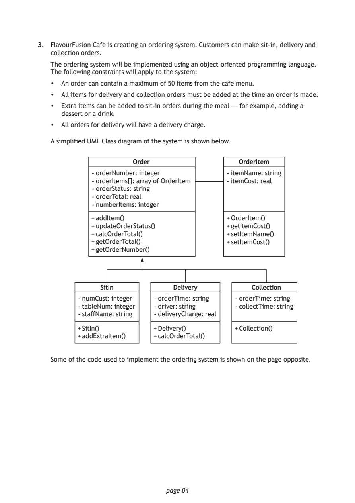
Selectable page text
3. FlavourFusion Cafe is creating an ordering system. Customers can make sit-in, delivery and
collection orders.
The ordering system will be implemented using an object-oriented programming language.
The following constraints will apply to the system:
• An order can contain a maximum of 50 items from the cafe menu.
• All items for delivery and collection orders must be added at the time an order is made.
• Extra items can be added to sit-in orders during the meal — for example, adding a
dessert or a drink.
• All orders for delivery will have a delivery charge.
A simplified UML Class diagram of the system is shown below.
Order OrderItem
-orderNumber: integer -itemName: string
-orderItems[]: array of OrderItem -itemCost: real
-orderStatus: string
-orderTotal: real
-numberItems: integer
+addItem() +OrderItem()
+updateOrderStatus() +getItemCost()
+calcOrderTotal() +setItemName()
+getOrderTotal() +setItemCost()
+getOrderNumber()
SitIn Delivery Collection
-numCust: integer -orderTime: string -orderTime: string
-tableNum: integer -driver: string -collectTime: string
-staffName: string -deliveryCharge: real
+SitIn() +Delivery() +Collection()
+addExtraItem() +calcOrderTotal()
Some of the code used to implement the ordering system is shown on the page opposite.
page 04PDF page 5
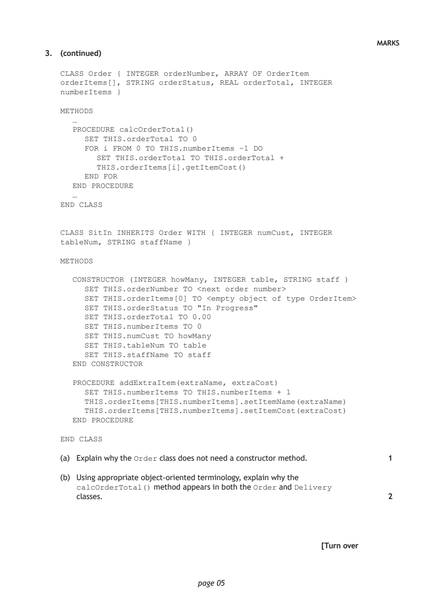
Selectable page text
MARKS
3. (continued)
CLASS Order { INTEGER orderNumber, ARRAY OF OrderItem
orderItems[], STRING orderStatus, REAL orderTotal, INTEGER
numberItems }
METHODS
…
PROCEDURE calcOrderTotal()
SET THIS.orderTotal TO 0
FOR i FROM 0 TO THIS.numberItems −1 DO
SET THIS.orderTotal TO THIS.orderTotal +
THIS.orderItems[i].getItemCost()
END FOR
END PROCEDURE
…
END CLASS
CLASS SitIn INHERITS Order WITH { INTEGER numCust, INTEGER
tableNum, STRING staffName }
METHODS
CONSTRUCTOR (INTEGER howMany, INTEGER table, STRING staff )
SET THIS.orderNumber TO <next order number>
SET THIS.orderItems[0] TO <empty object of type OrderItem>
SET THIS.orderStatus TO "In Progress"
SET THIS.orderTotal TO 0.00
SET THIS.numberItems TO 0
SET THIS.numCust TO howMany
SET THIS.tableNum TO table
SET THIS.staffName TO staff
END CONSTRUCTOR
PROCEDURE addExtraItem(extraName, extraCost)
SET THIS.numberItems TO THIS.numberItems + 1
THIS.orderItems[THIS.numberItems].setItemName(extraName)
THIS.orderItems[THIS.numberItems].setItemCost(extraCost)
END PROCEDURE
END CLASS
(a) Explain why the class does not need a constructor method. 1
Order
(b) Using appropriate object-oriented terminology, explain why the
method appears in both the and
calcOrderTotal() Order Delivery
classes. 2
[Turn over
page 05PDF page 6
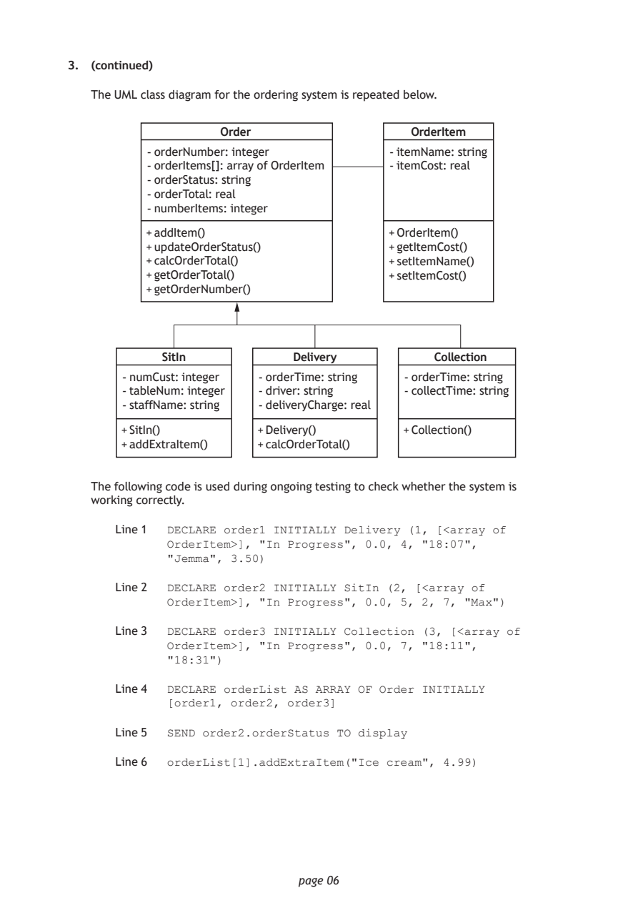
Selectable page text
3. (continued)
The UML class diagram for the ordering system is repeated below.
Order OrderItem
-orderNumber: integer -itemName: string
-orderItems[]: array of OrderItem -itemCost: real
-orderStatus: string
-orderTotal: real
-numberItems: integer
+addItem() +OrderItem()
+updateOrderStatus() +getItemCost()
+calcOrderTotal() +setItemName()
+getOrderTotal() +setItemCost()
+getOrderNumber()
SitIn Delivery Collection
-numCust: integer -orderTime: string -orderTime: string
-tableNum: integer -driver: string -collectTime: string
-staffName: string -deliveryCharge: real
+SitIn() +Delivery() +Collection()
+addExtraItem() +calcOrderTotal()
The following code is used during ongoing testing to check whether the system is
working correctly.
Line 1
DECLARE order1 INITIALLY Delivery (1, [<array of
OrderItem>], "In Progress", 0.0, 4, "18:07",
"Jemma", 3.50)
Line 2
DECLARE order2 INITIALLY SitIn (2, [<array of
OrderItem>], "In Progress", 0.0, 5, 2, 7, "Max")
Line 3
DECLARE order3 INITIALLY Collection (3, [<array of
OrderItem>], "In Progress", 0.0, 7, "18:11",
"18:31")
Line 4
DECLARE orderList AS ARRAY OF Order INITIALLY
[order1, order2, order3]
Line 5
SEND order2.orderStatus TO display
Line 6
orderList[1].addExtraItem("Ice cream", 4.99)
page 06PDF page 7
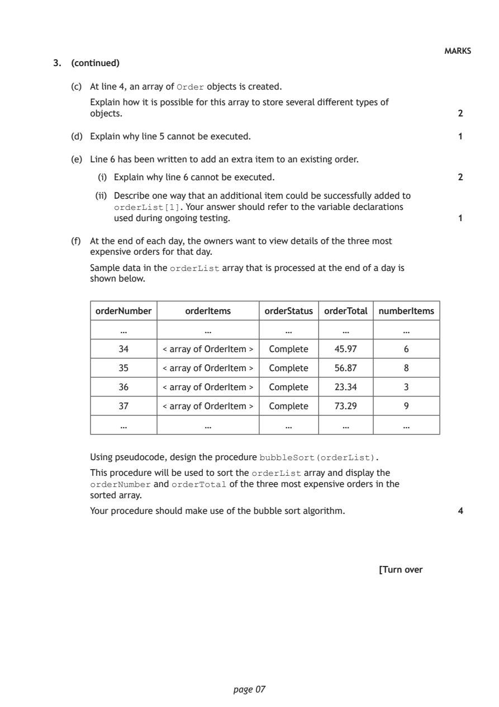
Selectable page text
MARKS
3. (continued)
(c) At line 4, an array of objects is created.
Order
Explain how it is possible for this array to store several different types of
objects. 2
(d) Explain why line 5 cannot be executed. 1
(e) Line 6 has been written to add an extra item to an existing order.
(i) Explain why line 6 cannot be executed. 2
(ii) Describe one way that an additional item could be successfully added to
. Your answer should refer to the variable declarations
orderList[1]
used during ongoing testing. 1
(f) At the end of each day, the owners want to view details of the three most
expensive orders for that day.
Sample data in the array that is processed at the end of a day is
orderList
shown below.
orderNumber orderItems orderStatus orderTotal numberItems
… … … … …
34 < array of OrderItem > Complete 45.97 6
35 < array of OrderItem > Complete 56.87 8
36 < array of OrderItem > Complete 23.34 3
37 < array of OrderItem > Complete 73.29 9
… … … … …
Using pseudocode, design the procedure .
bubbleSort(orderList)
This procedure will be used to sort the array and display the
orderList
and of the three most expensive orders in the
orderNumber orderTotal
sorted array.
Your procedure should make use of the bubble sort algorithm. 4
[Turn over
page 07PDF page 8
Question 4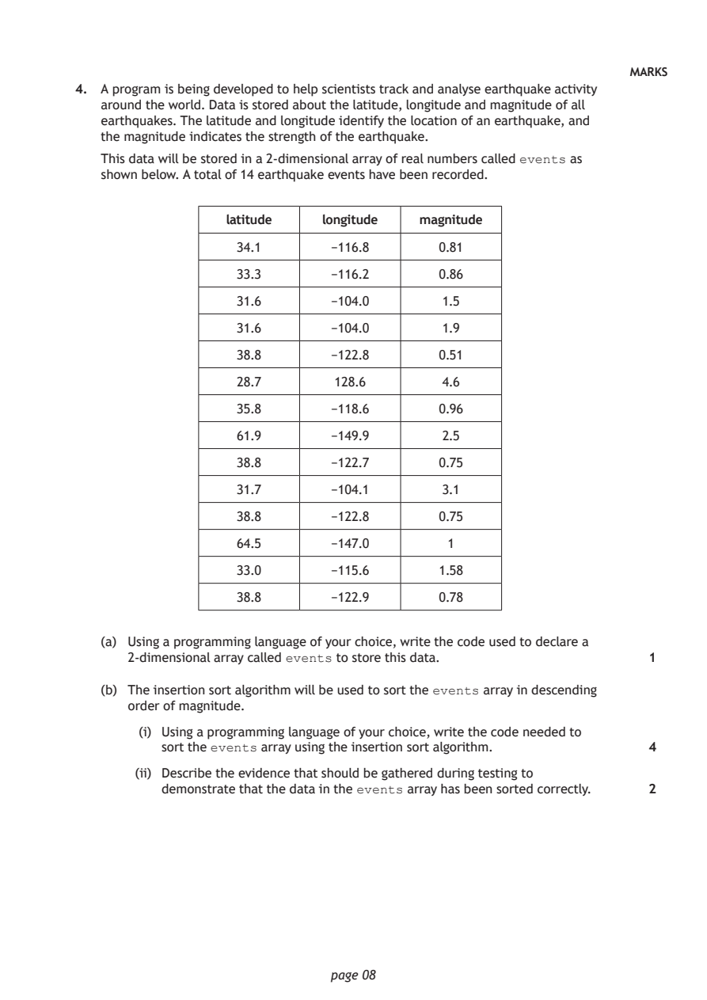
Selectable page text
MARKS
4. A program is being developed to help scientists track and analyse earthquake activity
around the world. Data is stored about the latitude, longitude and magnitude of all
earthquakes. The latitude and longitude identify the location of an earthquake, and
the magnitude indicates the strength of the earthquake.
This data will be stored in a 2-dimensional array of real numbers called as
events
shown below. A total of 14 earthquake events have been recorded.
latitude longitude magnitude
34.1 −116.8 0.81
33.3 −116.2 0.86
31.6 −104.0 1.5
31.6 −104.0 1.9
38.8 −122.8 0.51
28.7 128.6 4.6
35.8 −118.6 0.96
61.9 −149.9 2.5
38.8 −122.7 0.75
31.7 −104.1 3.1
38.8 −122.8 0.75
64.5 −147.0 1
33.0 −115.6 1.58
38.8 −122.9 0.78
(a) Using a programming language of your choice, write the code used to declare a
2-dimensional array called to store this data. 1
events
(b) The insertion sort algorithm will be used to sort the array in descending
events
order of magnitude.
(i) Using a programming language of your choice, write the code needed to
sort the array using the insertion sort algorithm. 4
events
(ii) Describe the evidence that should be gathered during testing to
demonstrate that the data in the array has been sorted correctly. 2
events
page 08PDF page 9
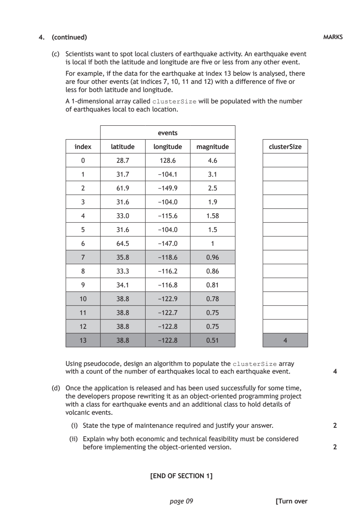
Selectable page text
4. (continued) MARKS
(c) Scientists want to spot local clusters of earthquake activity. An earthquake event
is local if both the latitude and longitude are five or less from any other event.
For example, if the data for the earthquake at index 13 below is analysed, there
are four other events (at indices 7, 10, 11 and 12) with a difference of five or
less for both latitude and longitude.
A 1-dimensional array called will be populated with the number
clusterSize
of earthquakes local to each location.
events
index latitude longitude magnitude clusterSize
0 28.7 128.6 4.6
1 31.7 −104.1 3.1
2 61.9 −149.9 2.5
3 31.6 −104.0 1.9
4 33.0 −115.6 1.58
5 31.6 −104.0 1.5
6 64.5 −147.0 1
7 35.8 −118.6 0.96
8 33.3 −116.2 0.86
9 34.1 −116.8 0.81
10 38.8 −122.9 0.78
11 38.8 −122.7 0.75
12 38.8 −122.8 0.75
13 38.8 −122.8 0.51 4
Using pseudocode, design an algorithm to populate the array
clusterSize
with a count of the number of earthquakes local to each earthquake event. 4
(d) Once the application is released and has been used successfully for some time,
the developers propose rewriting it as an object-oriented programming project
with a class for earthquake events and an additional class to hold details of
volcanic events.
(i) State the type of maintenance required and justify your answer. 2
(ii) Explain why both economic and technical feasibility must be considered
before implementing the object-oriented version. 2
[END OF SECTION 1]
page 09 [Turn overPDF page 10
Question 5Question 6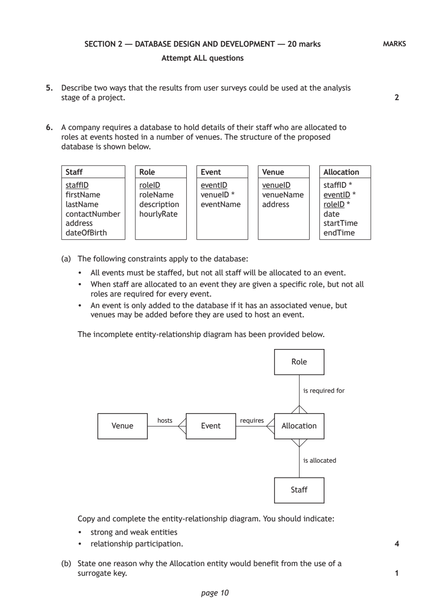
Selectable page text
SECTION 2 — DATABASE DESIGN AND DEVELOPMENT — 20 marks MARKS
Attempt ALL questions
5. Describe two ways that the results from user surveys could be used at the analysis
stage of a project. 2
6. A company requires a database to hold details of their staff who are allocated to
roles at events hosted in a number of venues. The structure of the proposed
database is shown below.
Staff Role Event Venue Allocation
staffID roleID eventID venueID staffID *
firstName roleName venueID * venueName eventID *
lastName description eventName address roleID *
contactNumber hourlyRate date
address startTime
dateOfBirth endTime
(a) The following constraints apply to the database:
• All events must be staffed, but not all staff will be allocated to an event.
• When staff are allocated to an event they are given a specific role, but not all
roles are required for every event.
• An event is only added to the database if it has an associated venue, but
venues may be added before they are used to host an event.
The incomplete entity-relationship diagram has been provided below.
Role
is required for
hosts requires
Venue Event Allocation
is allocated
Staff
Copy and complete the entity-relationship diagram. You should indicate:
• strong and weak entities
• relationship participation. 4
(b) State one reason why the Allocation entity would benefit from the use of a
surrogate key. 1
page 10PDF page 11
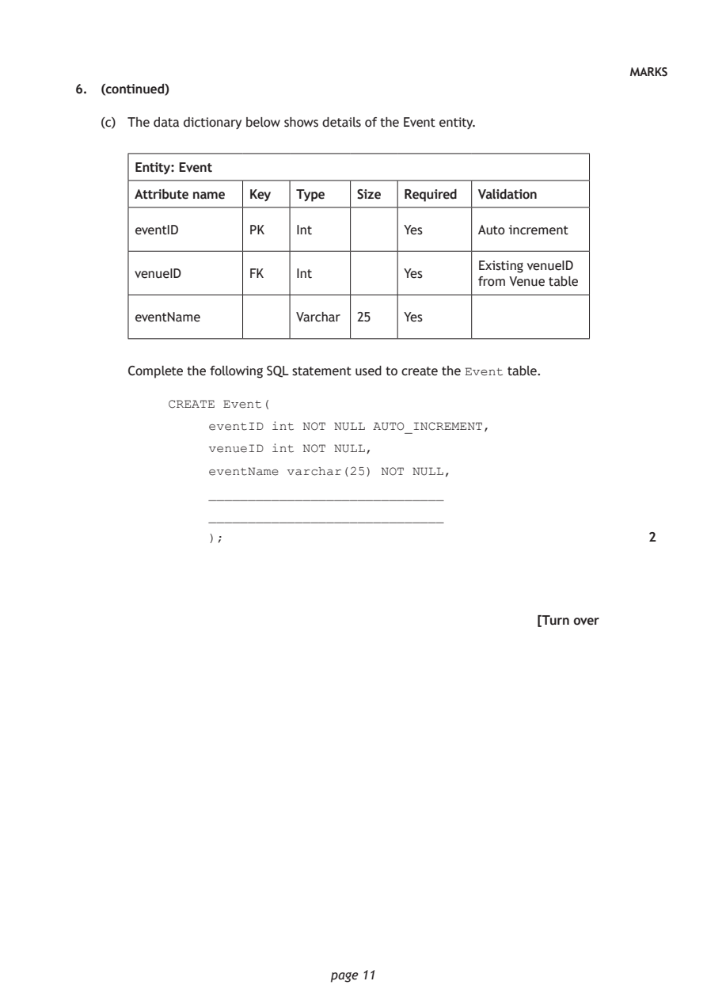
Selectable page text
MARKS
6. (continued)
(c) The data dictionary below shows details of the Event entity.
Entity: Event
Attribute name Key Type Size Required Validation
eventID PK Int Yes Auto increment
Existing venueID
venueID FK Int Yes
from Venue table
eventName Varchar 25 Yes
Complete the following SQL statement used to create the table.
Event
CREATE Event(
eventID int NOT NULL AUTO_INCREMENT,
venueID int NOT NULL,
eventName varchar(25) NOT NULL,
______________________________
______________________________
2
);
[Turn over
page 11PDF page 12
Question 7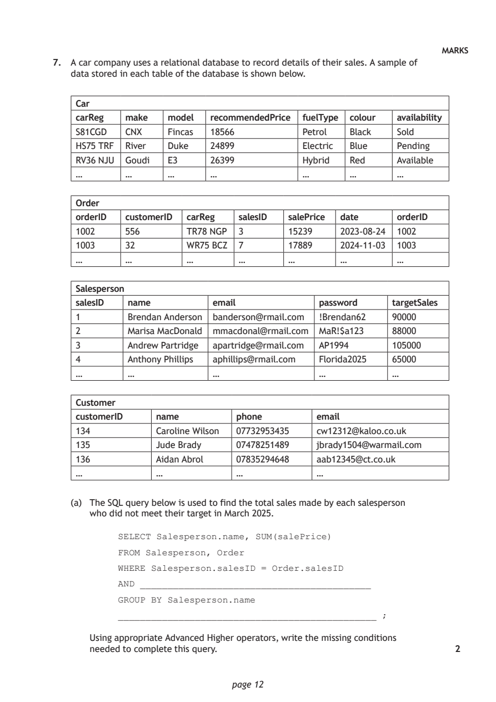
Selectable page text
MARKS
7. A car company uses a relational database to record details of their sales. A sample of
data stored in each table of the database is shown below.
Car
carReg make model recommendedPrice fuelType colour availability
S81CGD CNX Fincas 18566 Petrol Black Sold
HS75 TRF River Duke 24899 Electric Blue Pending
RV36 NJU Goudi E3 26399 Hybrid Red Available
… … … … … … …
Order
orderID customerID carReg salesID salePrice date orderID
1002 556 TR78 NGP 3 15239 2023-08-24 1002
1003 32 WR75 BCZ 7 17889 2024-11-03 1003
… … … … … … …
Salesperson
salesID name email password targetSales
1 Brendan Anderson banderson@rmail.com !Brendan62 90000
2 Marisa MacDonald mmacdonal@rmail.com MaR!$a123 88000
3 Andrew Partridge apartridge@rmail.com AP1994 105000
4 Anthony Phillips aphillips@rmail.com Florida2025 65000
… … … … …
Customer
customerID name phone email
134 Caroline Wilson 07732953435 cw12312@kaloo.co.uk
135 Jude Brady 07478251489 jbrady1504@warmail.com
136 Aidan Abrol 07835294648 aab12345@ct.co.uk
… … … …
(a) The SQL query below is used to find the total sales made by each salesperson
who did not meet their target in March 2025.
SELECT Salesperson.name, SUM(salePrice)
FROM Salesperson, Order
WHERE Salesperson.salesID = Order.salesID
AND __________________________________________
GROUP BY Salesperson.name
_______________________________________________ ;
Using appropriate Advanced Higher operators, write the missing conditions
needed to complete this query. 2
page 12PDF page 13
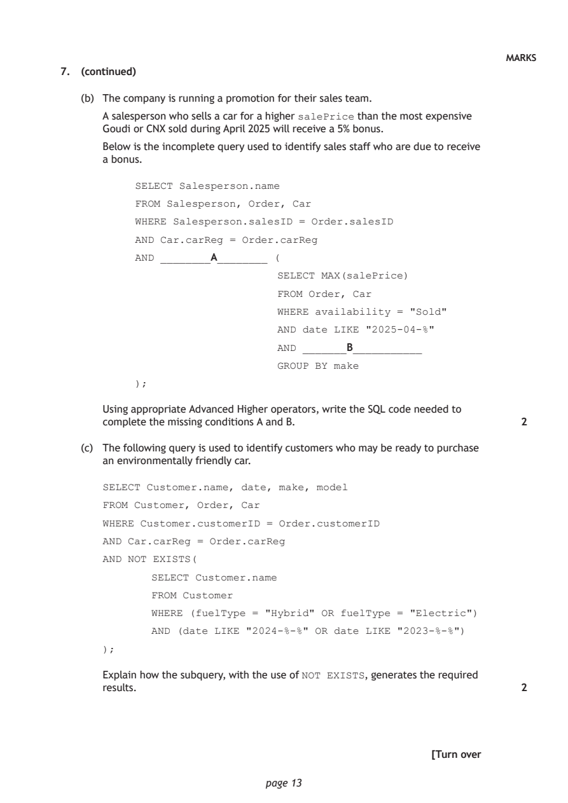
Selectable page text
MARKS
7. (continued)
(b) The company is running a promotion for their sales team.
A salesperson who sells a car for a higher than the most expensive
salePrice
Goudi or CNX sold during April 2025 will receive a 5% bonus.
Below is the incomplete query used to identify sales staff who are due to receive
a bonus.
SELECT Salesperson.name
FROM Salesperson, Order, Car
WHERE Salesperson.salesID = Order.salesID
AND Car.carReg = Order.carReg
A
AND ________ ________ (
SELECT MAX(salePrice)
FROM Order, Car
WHERE availability = "Sold"
AND date LIKE "2025-04-%"
B
AND _______ ___________
GROUP BY make
);
Using appropriate Advanced Higher operators, write the SQL code needed to
complete the missing conditions A and B. 2
(c) The following query is used to identify customers who may be ready to purchase
an environmentally friendly car.
SELECT Customer.name, date, make, model
FROM Customer, Order, Car
WHERE Customer.customerID = Order.customerID
AND Car.carReg = Order.carReg
AND NOT EXISTS(
SELECT Customer.name
FROM Customer
WHERE (fuelType = "Hybrid" OR fuelType = "Electric")
AND (date LIKE "2024-%-%" OR date LIKE "2023-%-%")
);
Explain how the subquery, with the use of , generates the required
NOT EXISTS
results. 2
[Turn over
page 13PDF page 14
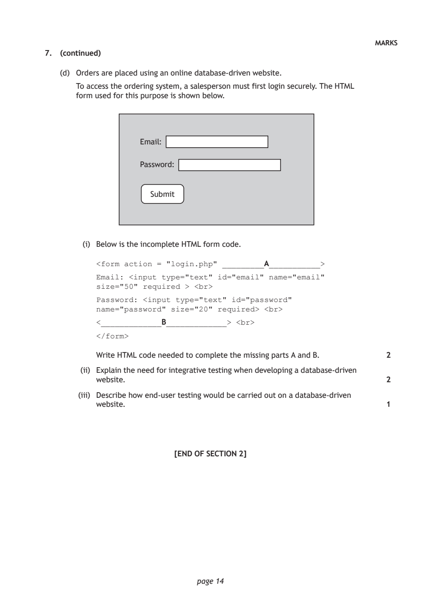
Selectable page text
MARKS
7. (continued)
(d) Orders are placed using an online database-driven website.
To access the ordering system, a salesperson must first login securely. The HTML
form used for this purpose is shown below.
Email:
Password:
Submit
(i) Below is the incomplete HTML form code.
A
<form action = "login.php" _________ ___________>
Email: <input type="text" id="email" name="email"
size="50" required > <br>
Password: <input type="text" id="password"
name="password" size="20" required> <br>
B
<_____________ _____________> <br>
</form>
Write HTML code needed to complete the missing parts A and B. 2
(ii) Explain the need for integrative testing when developing a database-driven
website. 2
(iii) Describe how end-user testing would be carried out on a database-driven
website. 1
[END OF SECTION 2]
page 14PDF page 15
Selectable page text
[Turn over for SECTION 3
DO NOT WRITE ON THIS PAGE
page 15PDF page 16
Question 8Question 9Selectable page text
SECTION 3 — WEB DESIGN AND DEVELOPMENT — 20 marks MARKS
Attempt ALL questions
8. Describe two ways that the results from user surveys could be used at the analysis
stage of a project. 2
9. A beautician allows clients to make bookings for treatments using a database-driven
website.
The website will be displayed on tablet devices and also output to A4 paper so that
the beautician has a printed copy of the bookings to refer to as clients arrive.
The CSS code used to create the tablet layout is shown below.
@media screen (max-width: 700px) {
body {background-color: lightgrey}
.flower1img {width: 150px; height: 150px}
.flower2img {width: 150px; height: 150px}
.heading {font-family: Lucida Handwriting; font-size:28px;
text-align: center}
}
Beauty
Treatments
tablet layout
Beauty
Treatments
A4 paper layout
page 16PDF page 17
Selectable page text
MARKS
9. (continued)
(a) Describe how the CSS for the tablet layout could be adapted to produce the A4
paper layout. 2
(b) Explain the need for integrative testing when developing a database-driven
website. 2
(c) Describe how end-user testing would be carried out on a database-driven
website. 1
[Turn over
page 17PDF page 18
Question 10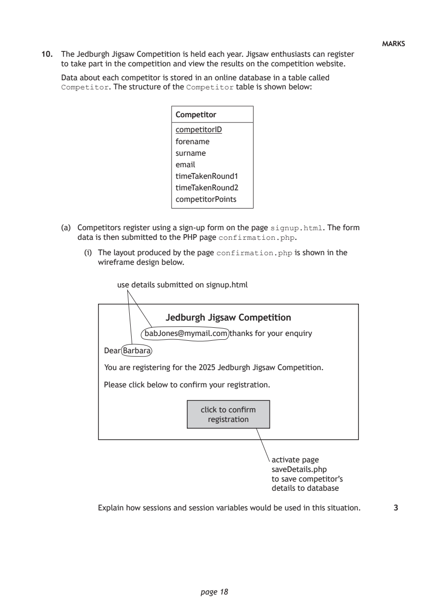
Selectable page text
MARKS
10. The Jedburgh Jigsaw Competition is held each year. Jigsaw enthusiasts can register
to take part in the competition and view the results on the competition website.
Data about each competitor is stored in an online database in a table called
. The structure of the table is shown below:
Competitor Competitor
Competitor
competitorID
forename
surname
email
timeTakenRound1
timeTakenRound2
competitorPoints
(a) Competitors register using a sign-up form on the page . The form
signup.html
data is then submitted to the PHP page .
confirmation.php
(i) The layout produced by the page is shown in the
confirmation.php
wireframe design below.
use details submitted on signup.html
Jedburgh Jigsaw Competition
babJones@mymail.com thanks for your enquiry
Dear Barbara
You are registering for the 2025 Jedburgh Jigsaw Competition.
Please click below to confirm your registration.
click to confirm
registration
activate page
saveDetails.php
to save competitor’s
details to database
Explain how sessions and session variables would be used in this situation. 3
page 18PDF page 19
Selectable page text
MARKS
10. (a) (continued)
(ii) Before the form data can be processed, the website must first connect to
the database server.
Write the PHP code needed to connect to the database and assign the
connection to the variable . Your code should make appropriate use
$link
of the following connection details:
database: jigsawFixture
password: pass1234
server: jigsaw1
2
user: admin
[Turn over
page 19PDF page 20
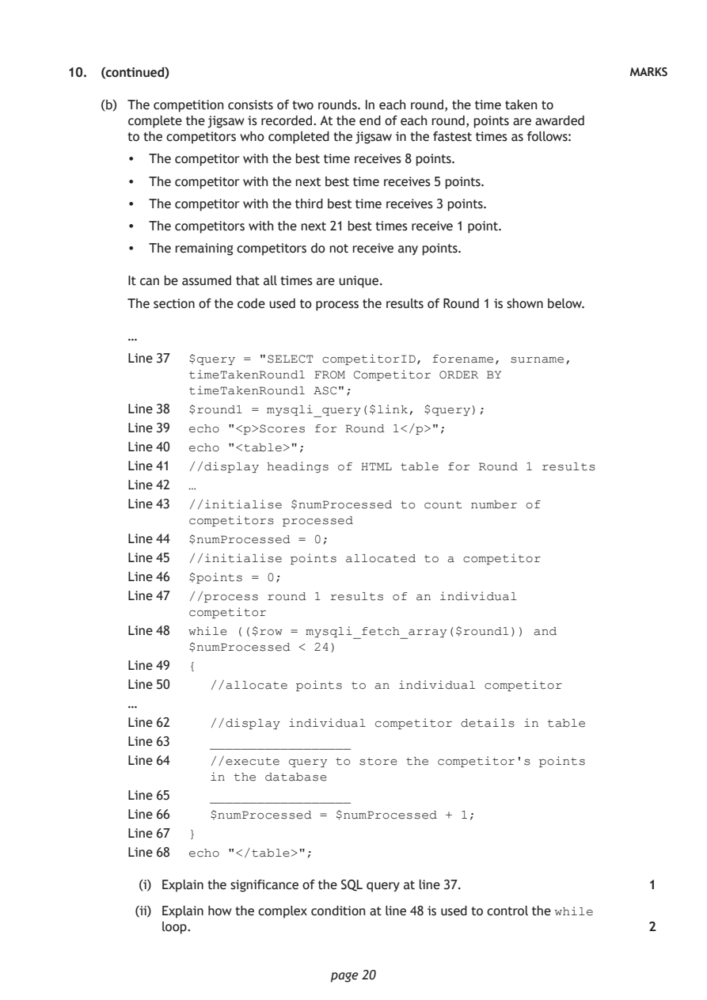
Selectable page text
10. (continued) MARKS
(b) The competition consists of two rounds. In each round, the time taken to
complete the jigsaw is recorded. At the end of each round, points are awarded
to the competitors who completed the jigsaw in the fastest times as follows:
• The competitor with the best time receives 8 points.
• The competitor with the next best time receives 5 points.
• The competitor with the third best time receives 3 points.
• The competitors with the next 21 best times receive 1 point.
• The remaining competitors do not receive any points.
It can be assumed that all times are unique.
The section of the code used to process the results of Round 1 is shown below.
…
Line 37
$query = "SELECT competitorID, forename, surname,
timeTakenRound1 FROM Competitor ORDER BY
timeTakenRound1 ASC";
Line 38
$round1 = mysqli_query($link, $query);
Line 39
echo "<p>Scores for Round 1</p>";
Line 40
echo "<table>";
Line 41
//display headings of HTML table for Round 1 results
Line 42
…
Line 43
//initialise $numProcessed to count number of
competitors processed
Line 44
$numProcessed = 0;
Line 45
//initialise points allocated to a competitor
Line 46
$points = 0;
Line 47
//process round 1 results of an individual
competitor
Line 48
while (($row = mysqli_fetch_array($round1)) and
$numProcessed < 24)
Line 49
{
Line 50
//allocate points to an individual competitor
…
Line 62
//display individual competitor details in table
Line 63
__________________
Line 64
//execute query to store the competitor's points
in the database
Line 65
__________________
Line 66
$numProcessed = $numProcessed + 1;
Line 67
}
Line 68
echo "</table>";
(i) Explain the significance of the SQL query at line 37. 1
(ii) Explain how the complex condition at line 48 is used to control the
while
loop. 2
page 20PDF page 21
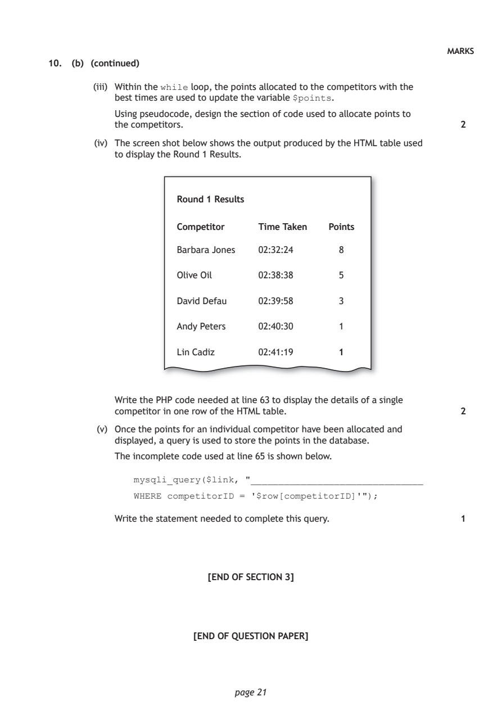
Selectable page text
MARKS
10. (b) (continued)
(iii) Within the loop, the points allocated to the competitors with the
while
best times are used to update the variable .
$points
Using pseudocode, design the section of code used to allocate points to
the competitors. 2
(iv) The screen shot below shows the output produced by the HTML table used
to display the Round 1 Results.
Round 1 Results
Competitor Time Taken Points
Barbara Jones 02:32:24 8
Olive Oil 02:38:38 5
David Defau 02:39:58 3
Andy Peters 02:40:30 1
Lin Cadiz 02:41:19 11
Write the PHP code needed at line 63 to display the details of a single
competitor in one row of the HTML table. 2
(v) Once the points for an individual competitor have been allocated and
displayed, a query is used to store the points in the database.
The incomplete code used at line 65 is shown below.
mysqli_query($link, "_______________________________
WHERE competitorID = '$row[competitorID]'");
Write the statement needed to complete this query. 1
[END OF SECTION 3]
[END OF QUESTION PAPER]
page 21PDF page 22
Selectable page text
[BLANK PAGE]
DO NOT WRITE ON THIS PAGE
page 22PDF page 23

Selectable page text
[BLANK PAGE]
DO NOT WRITE ON THIS PAGE
page 23PDF page 24
Selectable page text
[BLANK PAGE]
DO NOT WRITE ON THIS PAGE
page 24